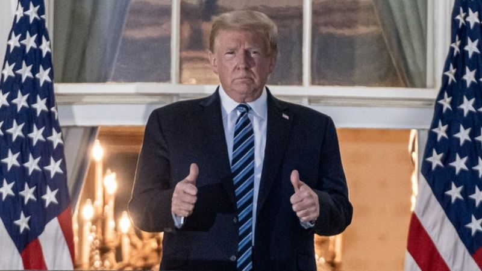
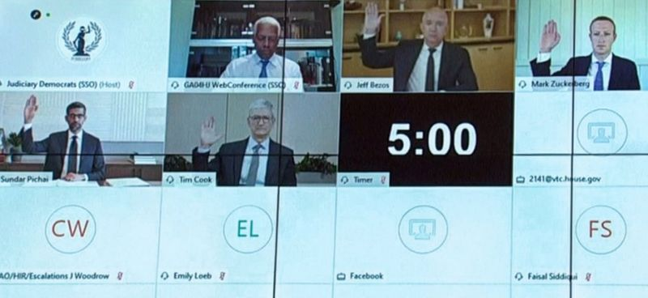

Big Tech: Between a rock and a hard place
Yesterday saw two huge clues for what Big Tech can expect in the years to come.
In the US, both the Democrats and the Republicans now have a fixed position on regulating tech.
They are both totally different.
First off, Trump.
After the President shared a piece of disinformation on Facebook and Twitter about the relative dangers of Covid, the two companies reacted: Twitter hid his post and Facebook removed it altogether.
Trump responded by tweeting "Repeal Section 230!!!".
This is a key piece of legislation that stops companies like Facebook and Twitter from being liable for the things people post.
It essentially gives them "platform" rather than "publisher" status.
Impossible task
Just imagine for a second if all of the posts on Facebook - all of the accusations, all of the libellous content, all of it - was the responsibility of Mark Zuckerberg
It doesn't work. Without Section 230 companies like Facebook, Twitter, TikTok etc couldn't function as they do now. They'd potentially have to moderate your content in real time.
Even for the most powerful artificial intelligence systems, that is not possible.
You might think: "Trump says he'll repeal Section 230, but will he actually?"
My response would be: "Look at TikTok."
Trump has well and truly followed up on his actions - without a judge's last minute intervention it would be illegal for Apple and Google's app stores to offer TikTok for download in the US now.
It's perfectly conceivable that a Trump presidency would follow through with his campaign threats.
Plenty of Republicans believe that much of social media has an anti-conservative bias. Trump would certainly find support from his own party to act.
Competition clash
The other big tech news from Tuesday was the release of The House Judiciary Committee's report into "antitrust".
This is the idea that Big Tech has got so big it is now flouts anti-competition rules.
This is a Democrat-led committee - the report was written by Democrats.
The report concludes: "To put it simply, companies that once were scrappy, underdog start-ups that challenged the status quo have become the kinds of monopolies we last saw in the era of oil barons and railroad tycoons."
The share price of all four companies dived as soon as the report was released.
Literally, the first recommendation is to prohibit "dominant platforms from operating in adjacent lines of business".
That would be massive. It could potentially stop companies like Google owning YouTube. Or Facebook owning Instagram.
The word "monopoly" is used 120 times in the report.
These weren't bi-partisan recommendations though - Republicans didn't support all the findings.
However, there is some common ground between the parties.
For example, Republican Ken Buck has said he agrees with much of the report.
And in terms of Section 230, Biden has also indicated he could getting rid of it - albeit for different reasons to Trump.
Big Tech election
And so we have two Presidential candidates, each with his own stick to bash Big Tech.
The company that perhaps is least hedged against these two approaches is Facebook. It's hard to know which option would be worse for the social network.

For others, well there's now a reasonable argument that can be made that Trump would be better.
Republican focus on social media bias would pretty much leave Apple and perhaps Amazon untouched.
The election issues in this campaign have been centred around Covid, Black Lives Matter, the economy and law enforcement.
But make no mistake, this is a huge election for Big Tech too.